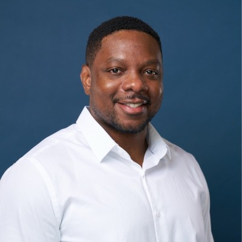

Fractional Head of Sales
I'm Dan Ebanks. I've sold door-to-door, closed six- and seven-figure enterprise SaaS deals with Fortune 500 pharma, and I'm currently building the sales motion from the ground up as founding AE at a venture-backed legal AI startup. Now I help early-stage teams do the same.
Who it's for
You've proven people will buy. Now you need a repeatable process, a pipeline you can trust, and someone who has carried a quota to build it with you.
You're closing deals yourself and need to hand off a process that works without you on every call.
You're hiring your first AEs or SDRs and want a playbook, a qualification standard and coaching from day one.
You sell to scientists, R&D leaders, lawyers or other experts who can spot a rehearsed pitch in seconds.
What you get
A documented motion from first touch to closed-won, with clear stages and exit criteria. If it isn't documented, it didn't happen.
MEDDIC- and Sandler-informed discovery so your team spends time on deals that will actually close.
Pipeline reviews and a forecast built on evidence, not hope. Lab rule: never report a result you haven't confirmed.
Help defining, hiring and ramping your first reps, plus live deal coaching on the opportunities that matter most.
How it works
I run sales the way I ran experiments: form a hypothesis, control the variables, observe, then adjust based on the outcome.
A deep dive into your pipeline, deals, messaging and customers. Mostly questions, very little pitching.
We design the playbook, qualification framework, cadences and metrics, then test them on live deals.
Hire and coach the team, tighten the forecast, and hand over a motion that runs without me.
Engagement options
A focused 30-day engagement: diagnose your current process, pipeline and messaging, then build and test a repeatable sales playbook you own.
Part-time sales leadership, about 5–10 hours a week: playbook, pipeline reviews, forecasting, hiring, and deal and team coaching.
Pricing depends on scope and stage. We'll work it out together on a short intro call.
Sales track record
From door-to-door territory sales in 2013 to enterprise SaaS and a founding AE seat today. Every number below comes straight from my record.

About
People ask me why I switched from science to sales.
"I never switched. I stacked."
Biology and chemistry taught me how complex systems work and how to break a hard problem into pieces. Pharma taught me rigour. Door-to-door and field sales taught me to earn every conversation. PatSnap taught me how to take all of that into a room with R&D leaders and translate it into business value.
My best first calls are ones where I barely talk. I stopped pitching and started asking questions: where the time goes, where the stress is, what actually matters. If the product fits, I show exactly that part. If it doesn't, I say so. People don't want to be sold to. They want to be understood.
That's the approach I bring to Scale Right: curious, evidence-driven, and focused on results you can measure.
Tell me where you are and where you want to be. We'll figure out on a short intro call whether I can help.
Book an intro call